Máquinas r3d · o freela no jogo
- Sapata B aprovada e mantida em todas (O₂, aquecedor, derretedor, painel solar e agora também a drill).
- Aquecedor: nv.1 = opção A (fornalha com janela de Magmatita); nv.2 = opção B (caldeira de coluna) ajustada pra ler como evolução da A: as janelas ganharam a mesma moldura de metal da A com verga dourada, a mesma faixa laranja em cima, as mesmas aletas de radiador nos dois lados (com trilho dourado) e o painel de 3 LEDs; saíram o bloco solto e o cano da direita. Magmatita à mostra nas duas.
- Drill T1 nova, mais simples e com a mesma ideia de laser: sapata B ao lado do veio, caixa com o indicador,
mastro, braço com contrapeso e uma cabeça de laser apontando pro veio. Mesmo feixe ciano pulsando, poça incandescente e
faíscas. Indicador em
(12, 54, 7, 10). - Aranha e tripé guardados pra T2/T3 em
futuro/(fora do contrato), idênticos ao que foi mostrado na v1.1. - Sem quadro desligado, como o dono pediu.
v1.2 · Aquecedor: nv.1 (A) × nv.2 (B ajustada)
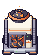
machine_heater.png 40×56
machine_heater_t2.png 40×64O que amarra os dois: a janela com moldura de metal e as pedras de Magmatita em brasa, a faixa laranja em cima da janela, as aletas cinza nas laterais, a carga de pedra por cima e a sapata B. O que diz "nv.2": maior, câmara dupla, verga e trilhos dourados, coroa de aletas brancas com aro dourado e pedras mais claras.
v1.2 · Drill T1 a laser (machine_drill)
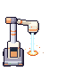
(12, 54, 7, 10)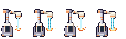
Menos peças que a aranha e o tripé: um mastro só. A sapata é a mesma B das outras máquinas (meia-largura 10), posta no canto da frente-esquerda dos 2×2 pra não cobrir o veio. A cabeça fica em cima do veio e o feixe desce até ele.
v1.2 · Guardadas pro futuro (T2/T3, fora do contrato)
futuro/drill_tripod.png · tripé · indicador (48, 47, 7, 12)futuro/drill_spider.png · aranha · indicador (29, 34, 7, 10)Código em tools/sprites/machines_r3d_futuro.py (drill_tripod e drill_spider), que
gera em futuro/. Quando virarem máquina, o nome (machine_drill_t2…) e o retângulo entram na bíblia
§6 antes.
v1.2 · Na base: Árido e Verde
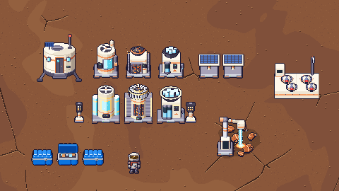
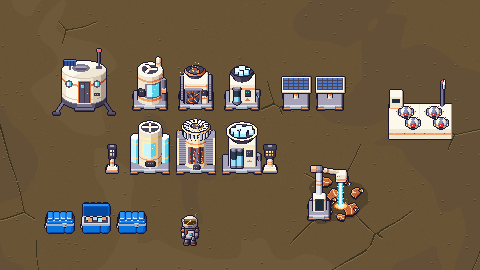
Só sprites, ordenados pelo pé; drill em cima de um vein_iron 2×2, baú azul e Explorador. Prévias 2×
(960×540): Árido · Verde.


v1.2 · Antes (v1.1) × depois (v1.2)
Aquecedor nv.2 · machine_heater_t2.png
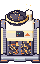

Drill (T1) · machine_drill.png

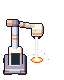
v1.2 · Pro Dev integrar
- Tamanhos e âncoras: nenhum desvio. Os 14 PNGs de
pendentes/têm o nome e o tamanho do contrato, com âncora no centro da base. Empendentes/está só o que vai pro jogo (maisanim/eeolico/, que já eram separados). - Único ajuste de código:
DRILL_FILL_RECT = (12, 54, 7, 10)(era(48, 47, 7, 12)). A janela fica na frente da caixa do pé do mastro, e o jogo enche de baixo pra cima, como hoje. - Quadro 0 da drill: com o laser ligado (o dono aprovou assim).
- Aquecedor: drop-in. Tiras ligadas em
pendentes/anim/anim_machine_heater(_t2).png. - Ordem de desenho: sem mudança (pelo pé). Feixe e poça estão dentro do PNG da drill, então caem por cima do veio.
- Regerar:
python3 tools/sprites/machines_r3d.py,python3 tools/sprites/machines_r3d_futuro.pyepython3 tools/sprites/machines_r3d_report.py(determinístico).
- Sapata padrão no lugar do plinto "cru" com a fileira de bolinhas: uma peça só
(
sapata(sc, meia_largura)), com altura, profundidade, cores e detalhes sempre iguais; só a largura acompanha a máquina. Está aplicada no O₂, no aquecedor e no derretedor (nv.1 e nv.2) e no painel solar. Três estilos pra escolher; a B (sapatas laranja) foi a aplicada. - Aquecedor a Magmatita (nv.1 e nv.2), redesenhado: câmara com janela mostrando as pedras de Magmatita incandescentes (basalto com veios de lava pulsando), carga por cima e calor saindo pelas aletas. Duas opções; a A (fornalha de janela) entrou no contrato.
- Drill a laser: uma proposta pra cada referência do dono, A (tripé) e B (aranha). A B entrou no contrato (pede um retângulo novo pra barra, veja em "Pro Dev").
- Nada mais mudou: terminal, luminárias, estação, drone, cápsula e eólico continuam idênticos ao freela.
v1.1 · 1 · Sapata padrão: 3 opções, a mesma peça em 3 larguras
Cada linha é a mesma sapata em 3 máquinas de larguras diferentes (painel solar, O₂ nv.1 e O₂ nv.2). Só a meia-largura muda (12, 16 e 19); altura (5), profundidade (1 tile), cores, friso, plaqueta e LED são fixos. Ela casa com o baú azul pela prata do friso (a mesma da faixa do baú) e com as máquinas pelo metal lilás e pelo laranja. Por ser baixa (uns 6 px de frente), cada detalhe foi pensado pra ler em pouco espaço: friso de 1 px claro na quina, sapatas laranja embaixo e LED.
A · chanfrada
placa grossa de cantos bem redondos, pezinhos escuros, friso prata na quina e painel escuro rebaixado com 2 respiros e LED.
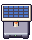
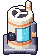
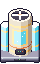
B · sapatas laranja recomendada · aplicada
a placa levantada em 4 sapatas laranja com solinha escura, friso prata na quina e plaqueta prata com fenda e LED verde.


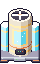
C · degrau
soco escuro largo com listras de advertência nos cantos e a placa metálica recuada em cima, friso prata e LED.
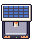
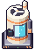
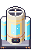
A escolhida (B) aplicada em todas que usam a base

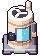

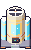

v1.1 · 2 · Aquecedor a Magmatita (nv.1 e nv.2)
Ideia do dono: o calor vem da Magmatita, pedra quente que nasce no basalto. Então a máquina mostra as pedras queimando: basalto escuro com veios de lava que pulsam quadro a quadro, fundo da câmara em brasa, carga de pedra por cima e o tremor de calor (fiapos subindo em zigue-zague) saindo pelo funil e pelas aletas. Família mantida: corpo branco quente, faixa laranja, metal lilás e luz em faixas. O nv.2 é a evolução: maior, com câmara dupla, pedras mais claras, verga e trilhos dourados e uma chaminé (A) ou coroa dupla com aro dourado (B).
A · fornalha de janela recomendada · no contrato


B · caldeira de coluna
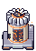
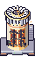
Por que a A: a janela grande com a pilha de pedras lê de cara como "fornalha de pedra quente" e o funil em cima diz "põe pedra aqui". A B (coluna com coroa de aletas radiais) é bonita, mas a janela é estreita e a coroa branca puxa o olho pro topo.
v1.1 · 3 · Drill a laser: tripé (A) × aranha (B)
As duas mantêm o quadro (64×80), os 4 quadros a 8 fps e a âncora (centro da base dos 2×2, em cima do veio). O feixe é luz: núcleo claro, brilho em volta engrossando e afinando (3 ↔ 5 px), anéis de energia descendo, poça incandescente no ponto de impacto, cruz de brilho, faíscas e lascas de pedra. A A usa feixe laranja e a B, ciano (dá pra trocar, é só a paleta).
A · tripé (feixe laranja)
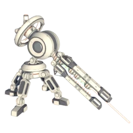
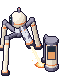
(48, 47, 7, 12)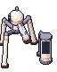
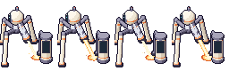
B · aranha (feixe ciano) recomendada · no contrato
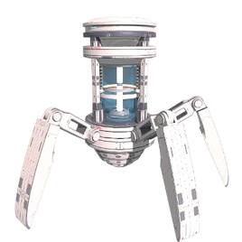
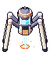
(29, 34, 7, 10)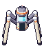
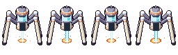
O que aproveitei das referências (só o estilo, desenho original): A: tripé articulado com joelhos redondos, a
cabeça-canhão esférica com o "olho" de lado, o cano longo com luvas e um trilho fino paralelo apontado pro chão.
B: cápsula de pé em três partes (barriga, tanque de vidro com colunas e tampa), o tanque de energia ciano e as 4
pernas longas com joelho alto cravadas no chão. Tudo convertido pra família (branco quente, metal lilás, faixas laranja,
contorno #1b1630).
Por que a B: o feixe cai reto no meio do veio, a silhueta é simétrica e leve (dá pra ver o veio entre as pernas) e o tanque ciano lê como "máquina de energia". A A é mais charmosa, mas é assimétrica, fica do lado esquerdo do 2×2 e precisa da caçamba à direita pra a barra caber no lugar de hoje.
v1.1 · Na base: Árido e Verde, com tudo, o baú azul e o Explorador
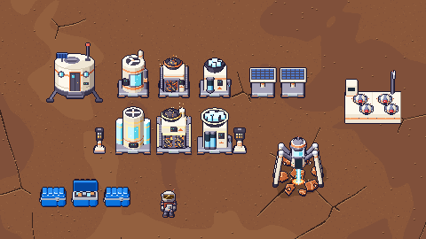
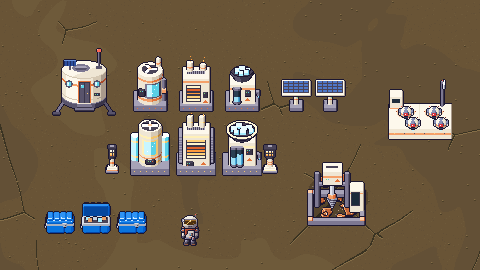
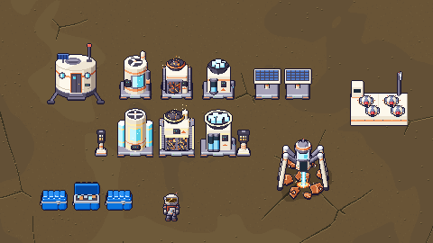
Recortes 480×270 (metade da tela) só com sprites, ordenados pelo pé como o jogo desenha. A drill está em cima de um
vein_iron 2×2 de verdade. Linha de cima, nv.1; de baixo, nv.2. Prévias em 2× (960×540):
Árido · Verde.


v1.1 · Antes (v1.0, freela) × depois (v1.1)
Gerador de O₂ nv.1 · machine_o2.png


Gerador de O₂ nv.2 · machine_o2_t2.png


Aquecedor nv.1 · machine_heater.png

Aquecedor nv.2 · machine_heater_t2.png
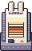

Derretedor nv.1 · machine_melter.png
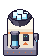

Derretedor nv.2 · machine_melter_t2.png
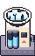

Painel solar · solar_panel.png
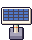
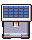
Drill automática · machine_drill.png
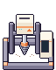
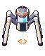
v1.1 · Pro Dev integrar
- Tamanhos e âncoras: nenhum desvio. nv.1 40×56, nv.2 40×64, painel 32×40, drill 256×80 (4×64×80). Âncora no centro da base do PNG, igual a hoje.
- Drill B: retângulo da barra novo.
DRILL_FILL_RECT = (29, 34, 7, 10)(era(48, 47, 7, 12)): a janela fica na "barriga" da cápsula, logo acima do emissor. O jogo continua enchendo de baixo pra cima na cor do minério. Se o dono preferir a A, o retângulo de hoje serve sem mudar nada. - Laser no quadro 0: o contrato só tem quadros "trabalhando", então o quadro 0 (usado quando a drill está cheia,
submersa, no fantasma e no contorno do E) mostra o feixe ligado. Proposta opcional, sem mudar o contrato agora:
um quadro
drill_b_off.png64×80 (emv11/) pra usar quando ela está parada. Se o dono topar, viramachine_drill_off.pngna bíblia §6. - Aquecedor: drop-in (mesmos nomes e tamanhos). As tiras ligadas ficam em
pendentes/anim/anim_machine_heater(_t2).png(4 quadros, sugestão de 5 fps). A Magmatita aqui é só visual; a regra de jogo (combustível, basalto) é com a bíblia. - Sapata: no gerador,
sapata(sc, meia_largura)é a única base. O corpo de cada máquina é assentado em cima dela peloScene.dznovo do motor, então o nv.2, que tinha base de 7, desce 2 px dentro do PNG (o PNG não muda de tamanho). O pé da sapata fica na penúltima linha do PNG, como antes. - Ordem de desenho: sem mudança (pelo pé). O feixe e a poça de impacto estão dentro do PNG da drill, então caem por cima do veio sozinhos.
- Promoção: só
pendentes/*.pngproassets/sprites/(e, se for ligar as animações,pendentes/anim/). As opções ficam emv11/e não vão pro jogo. - Regerar:
python3 tools/sprites/machines_r3d.py(determinístico, mesmo md5 rodando duas vezes) epython3 tools/sprites/machines_r3d_report.py. O--checkagora compara com o freela só os sprites que não mudaram de propósito (12 de 12 idênticos).
- Não é redesenho. O dono aprovou as máquinas da sessão experimental como estão. O código foi portado pra
tools/sprites/machines_r3d.py(autocontido, depende só dor3d.pydo repo) e gera 12 de 12 PNGs idênticos pixel a pixel aos do freela. - 14 sprites do contrato (mesmo nome, tamanho e âncora de hoje): O₂, aquecedor e derretedor nv.1 e nv.2, drill, painel solar, luminária e luminária forte, estação de drones, drone, cápsula e terminal.
- 10 tiras de animação que só o freela tem (novo, o Dev liga depois) e o gerador eólico pronto, ainda fora do jogo. A fornalha não entra.
- Baú, caixa de saque e contêiner ficam como estão (o r3d azul já foi aprovado e promovido).
- Estilo aproveitado do freela (nada de referência externa nova): corpo bege/branco, faixas laranja, LED, base de metal,
nv.2 mais robustas com dourado, contorno
#1b1630, volume calculado pelo motor r3d.
Antes (o jogo de hoje) × depois (o freela)
Gerador de O₂ nv.1 · machine_o2.png · 40×56
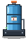

Gerador de O₂ nv.2 · machine_o2_t2.png · 40×64


Aquecedor nv.1 · machine_heater.png · 40×56


Aquecedor nv.2 · machine_heater_t2.png · 40×64
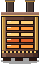
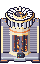
Derretedor nv.1 · machine_melter.png · 40×56
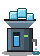
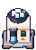
Derretedor nv.2 · machine_melter_t2.png · 40×64
Drill automática (2×2) · machine_drill.png · 256×80 · tira de 4 quadros (1º quadro ampliado)
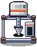

Painel solar · solar_panel.png · 32×40
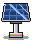

Luminária · lamp.png · 16×32

Luminária forte · lamp_t2.png · 16×32

Estação de drones (2×2) · drone_station.png · 64×72
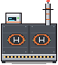
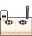
Drone · drone.png · 64×16 · tira de 4 quadros (1º quadro ampliado)
Cápsula / base · pod.png · 64×72
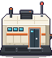
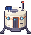
Terminal de parede · terminal.png · 32×32
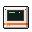
Animações que o jogo já usa
Drill (4 quadros de 64×80, recorte do drill_frame) e drone (4 quadros de 16×16). Mesmo formato do contrato.
Animações novas: o Dev liga depois
Hoje o jogo só anima a drill e o drone. As máquinas do freela têm 4 quadros de LED, ventoinha, grelha, água etc. Cada tira tem 4 quadros lado a lado do tamanho do sprite parado; o quadro 0 é o PNG parado do contrato. Mostradas a 5 fps (sugestão; o jogo decide).
anim/anim_machine_o2.png · 160×56 · NOVOanim/anim_machine_o2_t2.png · 160×64 · NOVOanim/anim_machine_heater.png · 160×56 · NOVOanim/anim_machine_heater_t2.png · 160×64 · NOVOanim/anim_machine_melter.png · 160×56 · NOVOanim/anim_machine_melter_t2.png · 160×64 · NOVOanim/anim_solar_panel.png · 128×40 · NOVOanim/anim_terminal.png · 128×32 · NOVOanim/anim_drone_station.png · 256×72 · NOVOanim/anim_pod.png · 256×72 · NOVOGerador eólico · pronto, ainda fora do jogo
pendentes/eolico/, separados de propósito pra ninguém copiar junto com o contrato. Eixo vertical, 3 pás
helicoidais, 32×64 (1 tile), âncora no centro da base. 8 quadros = 120° de giro (as 3 pás são iguais, então fecha sem
emenda). Ícone 16×16 incluído.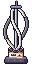
wind_turbine.png · 32×64 (1 tile)icon_wind.png · 16×16Na base, com as máquinas novas, o baú azul e o Explorador
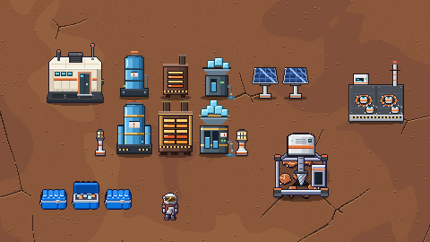
Recortes 480×270 (metade da tela do jogo) ampliados 2×, só com sprites, ordenados pelo pé como o jogo desenha. Cada
fileira é o nv.1 (em cima) e o nv.2 (embaixo). A estação leva os 4 drones nos DRONE_PADS de hoje
((18,44) (46,44) (25,55) (53,55)).
Desvios de contrato
assets/sprites/ e o que a bíblia §6 / §8 / §9 pede. Âncoras também iguais (centro da base do PNG), então é
troca de arquivo, sem mexer em config.py.O que muda é onde a arte ocupa dentro do PNG (caixa dos pixels opacos). Isso não quebra nada (o jogo ancora pelo PNG inteiro), mas o Dev deve olhar no smoke: onde o pé sobe/desce o objeto parece flutuar ou afundar uns px.
| arquivo | hoje | freela | tamanho | pixels opacos hoje (1º quadro) | pixels opacos freela | pé |
|---|---|---|---|---|---|---|
machine_o2.png | 40×56 | 40×56 | igual | x 3–36 · y 1–55 | x 2–37 · y 0–54 | pé -1 px |
machine_o2_t2.png | 40×64 | 40×64 | igual | x 0–39 · y 0–63 | x 0–39 · y 8–62 | pé -1 px |
machine_heater.png | 40×56 | 40×56 | igual | x 3–36 · y 5–55 | x 2–37 · y 6–54 | pé -1 px |
machine_heater_t2.png | 40×64 | 40×64 | igual | x 1–38 · y 0–63 | x 0–39 · y 6–62 | pé -1 px |
machine_melter.png | 40×56 | 40×56 | igual | x 2–39 · y 8–55 | x 2–38 · y 9–54 | pé -1 px |
machine_melter_t2.png | 40×64 | 40×64 | igual | x 0–39 · y 0–63 | x 0–39 · y 9–62 | pé -1 px |
machine_drill.png | 256×80 | 256×80 | igual | x 1–62 · y 2–78 | x 3–48 · y 19–74 | pé -4 px |
solar_panel.png | 32×40 | 32×40 | igual | x 1–30 · y 3–39 | x 1–31 · y 4–38 | pé -1 px |
lamp.png | 16×32 | 16×32 | igual | x 1–14 · y 0–30 | x 1–14 · y 0–29 | pé -1 px |
lamp_t2.png | 16×32 | 16×32 | igual | x 1–14 · y 0–30 | x 0–15 · y 0–29 | pé -1 px |
drone_station.png | 64×72 | 64×72 | igual | x 1–62 · y 0–70 | x 0–63 · y 11–71 | pé 1 px |
drone.png | 64×16 | 64×16 | igual | x 0–15 · y 2–14 | x 0–15 · y 2–15 | pé 1 px |
pod.png | 64×72 | 64×72 | igual | x 0–63 · y 2–71 | x 0–63 · y 2–69 | pé -2 px |
terminal.png | 32×32 | 32×32 | igual | x 4–27 · y 4–28 | x 3–28 · y 6–28 |
- Pé (última linha opaca): onde a coluna "pé" aparece, a base do freela fica mais acima/abaixo que a de hoje. Se incomodar, o ajuste é de arte (eu desloco no gerador), não de código.
- Estação: o freela é mais baixa no topo (a torre sobe até y=11; a de hoje vai até y=0), com os mesmos 2 pads H em (18,44) e (46,44). Os slots 3 e 4 ((25,55) e (53,55)) caem na frente do deck; confira na cena acima.
- Drill: o indicador de enchimento continua em
(48, 47, 7, 12)(DRILL_FILL_RECT), desenhado no próprio PNG como hoje. - Luminárias: a luz é desenhada pelo jogo no tile, não depende do sprite. O vidro aceso do freela fica uns 2 px mais baixo no PNG que o de hoje (centro do vidro ~ (7,16)).
- Terminal: fica do jeito 2D de sempre (o freela não o refez em 3D), mas é outro desenho: placa bege com tela verde.
- Baús e caixas: o freela tem os dele (
chest.png), mas o jogo já usa o r3d azul aprovado: não trazido de propósito. - Broca de mão (
drill_*.pngda raiz do freela): não é máquina e já foi tratada na sua própria rodada (reports/design/drill_hand_*). Fora deste lote.
Pro Dev integrar
- Drop-in: os 14 PNGs de
pendentes/têm o mesmo nome e tamanho dos deassets/sprites/. Na promoção, copia sópendentes/*.png(não as pastasanim/eeolico/). - Âncora: centro da base do PNG (como hoje). 1 tile: nv.1 40×56, nv.2 40×64 (passam 4 px de cada lado do tile), solar 32×40, luminária 16×32, terminal 32×32 na parede. 2×2: drill 64×80 (4 quadros) e estação 64×72, cápsula 64×72.
- Quadros:
machine_drill.png256×80 = 4×(64×80), recorte(64·f, 0, 64, 80);drone.png64×16 = 4×(16×16). Os dois já são animados pelo jogo (8 e 15 fps). O quadro 0 dos outros é o PNG parado. - Animações novas (
pendentes/anim/): tiras de 4 quadros lado a lado, tamanho do quadro = tamanho do sprite parado. Pra ligar é o mesmo recorte dodrill_frame. Rodar só com a máquina ligada/com energia é decisão do jogo. - Drones: os 4 slots pousam nos
DRONE_PADSde hoje, sem mudar. - Ordem de desenho: igual a hoje (ordenado pelo pé; sem sombra no sprite, como o r3d azul: se quiser a sombra de chão, o jogo põe).
- Contorno do alvo do E e máquina submersa usam a silhueta opaca: funcionam sem mudança.
- Eólico:
pendentes/eolico/(32×64, 8 quadros de 32×64 em 256×64, ícone 16×16). Fora do jogo até o dono pedir. - Regerar:
python3 tools/sprites/machines_r3d.py(determinístico);--checkcompara pixel a pixel com o freela do Desktop; este report sai depython3 tools/sprites/machines_r3d_report.py.
Conferência pixel a pixel com o freela
Só os sprites que a v1.1 não mexeu de propósito: 12 de 12 bateram (RGBA idêntico). Nenhum diferente.
terminal.pnglamp.pnglamp_t2.pngdrone_station.pngdrone.pngpod.pnganim/anim_terminal.pnganim/anim_drone_station.pnganim/anim_pod.pngeolico/wind_turbine.pngeolico/anim_wind_turbine.pngeolico/icon_wind.png